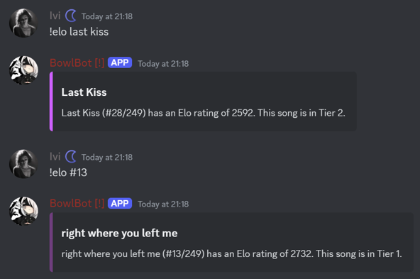
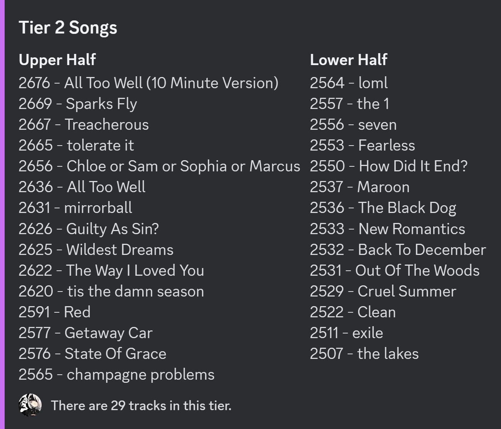

All
tracks in TaylorBowl are assigned an Elo value, which is a way of giving each a score. The value increases when a song wins a
TaylorBowl but decreases when it loses one. Based on these Elo, tracks are separated into Tiers.

The Elo of Last Kiss and the 13th highest track by Elo.
Elo was originally assigned by
Bianca based on external polls, but is now determined by bowls.
To find the elo of a track, the commands
!elo name or
!elo #rank can be used.
History
When TaylorBowl first started, tracks were assigned an Elo based on a series of polls conducted in the subreddit
r/TaylorSwift from March to August 2016. Tracks ranked higher were assigned higher Elo. The average Elo of all songs was, and still is, 2000.
Elo Changes
When a bowl ends, the amount of Elo gained by the winning song is the same as that lost by the losing song (i.e. if track A wins and gains 20 Elo, track B loses 20 Elo). This ensures the average remains the same. Elo change is determined by the number of votes, the Tier of the Bowl, and the difference in Elo between both tracks.
The following statements assume the other two factors remain the same. For the number of votes, generally speaking, the larger the difference in votes between the two tracks, the larger the Elo change. For the Tier of the Bowl, Tiers closer to Tier 5 will have a greater Elo change than those further from Tier 5, e.g. Tier 6 will have a greater Elo change than Tier 0. For the difference in Elo between both tracks, if a track with higher Elo wins, the Elo change will be lesser. Conversely, if a track with lower Elo wins, the Elo change will be greater.
You may use the
EsteBot command
/elochange to calculate the change in Elo of two songs in a Bowl.
New Tracks
When new tracks are added, there are two possible ways for their Elo to be determined. For tracks added en masse, such as the 31 songs on
THE TORTURED POETS DEPARTMENT: THE ANTHOLOGY, they are all assigned an Elo of 0. As the lowest Elo of a normal song tends to be above 800, and the highest of newly added tracks tend to be below 400, the newly added songs do not interact with any existing ones. At the turn of the next
Season, their Elo are manually adjusted based on the final results from their time spent separate from the other tracks by simply adding 2000. Alternatively, new tracks may be placed directly at 2000 Elo. This often happens with smaller sets of new tracks, such as Vault Tracks or singles such as
Carolina.
Notably, when
All Too Well (10 Minute Version) was added in February 2022 at 2000 Elo, it won all of its bowls for 26 days with a Win Streak of 23, before being defeated by
champagne problems.
Season Resets
At the end of every Season, all tracks undergo a “soft reset” of their Elo. The #1 track is placed at 2900 Elo, or the minimum for Tier 0, and all other tracks adjust such that the proportion of distances between them remain the same. For example, a track at the midpoint between the #1 track and 2000 Elo before the reset will still be at the midpoint after the reset.
This regular soft reset ensures that matchups remain possible. As tracks win and lose bowls, those with very high or very low Elo tend to be too far from other tracks for matchups due to the Sufficient Closeness Eligibility requirement. If left unchecked, eventually there may no longer be any valid matchups.

The Elo of all tracks in Tier 2.
Tracks are split into 11 Tiers based on their Elo. The Tiers are numbered 0 to 10, where Tier 0 has the highest Elo tracks and Tier 10 has the lowest. As Tier 5 is in the middle, and tracks with 2000 Elo are placed there, it has the greatest number of tracks. The further from Tier 5, the less tracks there are in any given Tier.
To view all tracks in a Tier, the command !tier number can be used. It lists all songs in a given Tier from highest to lowest Elo.
Divisions
All Tiers except 0 and 10 span 200 Elo, and these boundaries do not change even with Season Resets:
Tier 0: 2900 Elo and above
Tier 1: 2700-2899 Elo
Tier 2: 2500-2699 Elo
Tier 3: 2300-2499 Elo
Tier 4: 2100-2299 Elo
Tier 5: 1900-2099 Elo
Tier 6: 1700-1899 Elo
Tier 7: 1500-1699 Elo
Tier 8: 1300-1499 Elo
Tier 9: 1100-1299 Elo
Tier 10: 1099 Elo and below
Each Tier is also assigned a colour. These are purely aesthetic but Bianca has detailed the reasons for each colour:
Tier 0: Black, from anti-default when written in text
Tier 1: Purple, based on Overwatch Grandmaster Aura
Tier 2: Lavender, based on Overwatch Masters Aura
Tier 3: Periwinkle, from diamond
Tier 4: Gray, from platinum
Tier 5: Yellow, from gold
Tier 6: Dark Gray, from silver
Tier 7: Orange, from bronze
Tier 8: Maroon, as it is between bronze and wood aesthetically
Tier 9: Brown, from wood
Tier 10: White, from default when written in text
Impacts
Tiers impact how much a bowl affects the Elo of both songs, as covered in Elo System#Elo Changes.
When forcing or queueing Bowls, the further the Tier of the bowl from Tier 6, the more expensive it is. For every Tier of distance from Tier 6, the cost doubles, e.g. a Tier 1 costs double of a Tier 2, which is double of a Tier 3, and a Tier 4 costs the same as a Tier 8 as they are both 2 Tiers away from Tier 6. The exception is a Tier 0 Bowl, which costs 4 times of what it normally would, or 8 times of a Tier 1 Bowl.
The default length of all bowls (i.e. those from a natural start) is 11 minutes, except for Tier 0 bowls, which is 22 minutes.
List of Commands
| Command |
Description |
| /elochange |
|
| !elo name/#rank |
Displays the rank, Elo, and Tier of the specified song.
Either track or #rank must be included, which refers to the track specified. |
| !tier number |
Lists all tracks in a Tier from highest to lowest Elo.
number is a mandatory parameter that refers to the desired Tier. |
List of Formulae
1.1 Change in Elo of track A due to a Bowl:
where \(K\) is the K Value; \(S_{A}\) is the score of Track A, which is 1 if it wins and 0 if it loses; and \(E_{A}\) is the track A's current Elo.
1.2 Expected Score of a track:
where \(R_{A}\) and \(R_{B}\) are the Elo ratings of track A and B respectively.
1.3 K Value:
where \(m\) is the multiplier.
1.4 Multiplier:
2 New Elo of a new track added from Tier 10 during a Season Reset:
3 New Elo of a track after a Season Reset:
List of Terms
| Term |
Definition |
| Default Duration |
The duration of a Bowl from a natural start. |
| Score |
The score of a track in a Bowl is 1 when it wins and 0 when it loses. |
| Soft Reset |
A change in Elo of all tracks that moves them closer to 2000 Elo while maintaining proportions of distances. |
 TAYLORBOWL WIKI
TAYLORBOWL WIKI